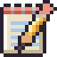

Le manuel du personnel
1. Les bases
Tu commences comme Stagiaire d’observation à préparer le thé dans la cuisine au sous-sol de Synergex plc. Chaque étage de la tour de 30 étages a son propre boulot, une machine ou un bureau fonctionnant avec un compte à rebours et qui rapporte de l’argent à chaque cycle terminé. Ton objectif est d’engranger des Synbux, d’améliorer tes installations et d’obtenir des promotions jusqu’au dernier étage.

Ton premier boulot : faire le thé. Touche-le pour accélérer la tournée.
- Les boulots rapportent tout seuls. Une fois lancé, un boulot continue de tourner, même quand l’application est fermée.
- Améliore les boulots pour gagner plus et remplir les bureaux d’employés.
- Remplis la jauge de Kudos de bureau en haut de l’écran, puis touche-la pour demander une promotion.
- Chaque promotion multiplie tous tes gains, et toutes les quelques promotions, tu montes d’un étage vers un nouveau boulot.
Lors de ton premier jour, Brenda des RH te fait faire le tour du propriétaire, tu peux donc aussi apprendre sur le tas.
Chaque cinématique peut être passée avec Passer en haut à droite, tout comme la visite. Le jeu te demande toujours confirmation.
2. Synbux, Kudos de bureau et trombones dorés
| Devise | À quoi ça sert |
|---|---|
| Synbux (§) | Gagné à chaque cycle de travail terminé. Dépense-le pour améliorer tes boulots et acheter des outils. |
| Gagnés également à chaque fin de cycle. Ne se dépensent jamais : remplis la jauge pour débloquer ta prochaine promotion. | |
| La devise premium. Obtenus grâce aux promotions, aux défis, à ta carte de pointage, aux événements et aux pubs pour trombones gratuits, ou achetés dans la Boutique. Dépense-les en boosts, sauts dans le temps et outils premium. |
3. Se déplacer dans le bureau
L’écran principal affiche un étage de la tour, vu de profil. Glisse à gauche et à droite pour le parcourir et pince pour zoomer. Presque tout peut être touché.

- Le boulot de l’étage. Touche-le pour l’accélérer. Son étiquette en bas de l’écran indique son niveau, ce qu’il rapporte et le bouton Améliorer.
- Ton équipe. Les bureaux se remplissent au fur et à mesure que le boulot monte de niveau. Touche n’importe qui pour une réplique.
- Ton bureau (marqué TOI) se trouve à l’étage où tu as été promu.
- Le bureau du chef. Touche le chef pour entendre ce qu’il a à dire.
- Les ascenseurs. Touche un ascenseur pour afficher le panneau de boutons et te rendre à n’importe quel étage débloqué.
- L’imprimante et la fontaine à eau. Touche-les pour une surprise.
- L’escalier de secours. Garde un œil sur la cage d’escalier : des gens vont et viennent.
Le bouton de carte dans la barre supérieure (la petite tour) montre tout le bâtiment : les étages débloqués, où se trouve ton bureau et qui dirige chaque étage.
Fais glisser vers le haut et le bas pour voir au-dessus et en dessous de l’étage : le faux plafond (et le toit, au dernier étage) et l’étage du dessous.
La journée suit l’horloge de ton téléphone : lever du soleil dès 6h, crépuscule dès 17h. À partir de 19h, les lampes de bureau s’allument, les agents d’entretien font leur tournée, et certains soirs il pleut.
4. Le hall d’accueil
Le rez-de-chaussée abrite le hall d’accueil, et le jeu s’y ouvre à chaque lancement. Touche ↩ MON BUREAU en haut pour monter à ton étage, ou prends l’ascenseur.

- Les ascenseurs pour remonter vers les bureaux.
- La pointeuse. Touche-la pour voir ta carte de pointage et ta série (voir Pointer).
- Le panneau d’affichage. L’événement en cours, ou à venir, est épinglé en haut : touche-le pour l’événement. En dessous, tes succès et les classements (voir Succès et classements), puis les notes de service habituelles.
- L’affiche « Événement bientôt ! ». Elle apparaît sept jours avant le début d’un événement. Touche-la pour découvrir ce qui arrive.
- Maxine à la réception, toujours au téléphone. Quand elle a des nouvelles du patron, la caméra se tourne vers elle : touche-la pour les entendre. C’est aussi elle qui te remet tes trophées. Une fois par semaine, elle aura aussi besoin d’aide pour retrouver des objets perdus (voir Objets perdus).
- Ron de la sécurité. Il fait un petit signe.
- Stan le gardien. Touche-le pour voir À propos : la version de l’application, les nouveautés et les licences. Quelques jours après tes débuts, il voudra peut-être te glisser un mot (voir La chasse aux rats de Stan).
- L’entrée. Les visiteurs arrivent par la porte tambour.
- La vitrine à trophées. Touche-la pour regarder à l’intérieur (voir Trophées).
5. Boulots et niveaux
- Démarre un boulot avec son premier niveau, puis améliore-le avec des Synbux. Chaque niveau rapporte plus.
- Aux niveaux 10, 25, 50, 100 et au-delà, le boulot tourne deux fois plus vite.
- Touche un boulot pour l’accélérer. Chaque pression fait avancer la tâche en cours, et les gains s’envolent en lettres dorées.
- Surcharge du bureau. Touche frénétiquement et la jauge de Surcharge apparaît à gauche. Plus elle chauffe, plus chaque appui rapporte (jusqu’à x2,5) et plus la panique monte. Remplis-la et l’étage passe en craquage total pendant quelques secondes : chaos complet et chaque appui vaut x3. Ensuite, tout le monde a besoin de quelques secondes pour se calmer avant de pouvoir la remplir à nouveau.
- Dans la fenêtre Tâches, tu peux acheter un niveau, dix, ou MAX (autant que tu peux t’en offrir) d’un seul coup.
6. Promotions et étages

- Il y a 150 promotions, cinq sur chacun des 30 étages.
- Quand la barre de Kudos de bureau est pleine, elle clignote : touche-la pour réclamer une promotion.
- Chaque promotion multiplie tous tes gains de Synbux (×1,10) et de Kudos de bureau (×1,06).
- La première promotion de chaque étage déplace ton bureau à l’étage supérieur, débloque le boulot de cet étage et rapporte des trombones dorés. Un nouveau chef se présente.
- Les 2e et 4e promotions d’un étage débloquent ses outils.
- Ta tenue devient de plus en plus chic à mesure que tu t’élèves dans la hiérarchie.
Les étages s’étendent du Support (thé, courrier, photocopies) en passant par l’Admin, l’Informatique et les Services généraux, la Direction et les Cadres, jusqu’aux étages Exécutifs : fusions, golf et, au tout dernier étage, Gérer l’empire.
7. Tâches, Outils, Carrière et Boutique
Les quatre boutons en bas ouvrent des fenêtres par-dessus le bureau :
| Button | What's inside |
|---|---|
 Tâches | Tous tes boulots : niveaux, gains, prochain palier de vitesse et achat de niveaux en masse. |
| Améliorations uniques. Chaque étage en possède deux (une triple le salaire du boulot, une double sa vitesse), plus des outils généraux pour toute l’entreprise (vitesse, gains, Kudos, temps d’absence prolongé) et des outils premium achetés avec des trombones. S’il te manque un peu de Synbux pour un outil, Payer maintenant met tous tes Synbux et complète le reste en trombones. | |
| Carrière | Tous les échelons de l’entreprise, les Kudos de bureau nécessaires pour chacun et les trombones qu’ils rapportent. |
| Offres du jour, cadeaux gratuits (pubs), VIP, packs de trombones et boosts à acheter : Heures sup (vitesse doublée pendant 30 min) et sauts dans le temps (Déjeuner prolongé 1 heure, Demi-journée 4 heures, Jour férié 24 heures de salaire d’un coup). |
8. Pendant ton absence
- Ton équipe continue de travailler quand l’application est fermée, jusqu’à épuisement de ton temps d’absence : 3 heures au départ, jusqu’à 24 heures avec les outils, plus 4 heures de bonus pour les VIP.
- À ton retour, l’encadré De retour au bureau te montre ce que tu as gagné. Touche Encaisser, ou Doubler en regardant une courte pub (les VIP doublent instantanément).
- Quand ton temps d’absence est écoulé, le travail s’arrête jusqu’à ton retour. Un rappel te prévient dès que ta bannette d’arrivée est pleine (active les rappels dans les Paramètres).
- Absent depuis une semaine ou plus ? Un cadeau de bienvenue t’attend : 10 trombones dorés et une pause café de 30 minutes.
- Garder l’écran allumé (dans les Paramètres) empêche ton téléphone de se mettre en veille pendant que le jeu tourne, idéal pour laisser tourner le bureau sous tes yeux.
- Appuyer sur Retour te demande si tu veux pointer la sortie. Pointer la sortie sauvegarde ta partie (ainsi que sur le cloud si tu es connecté) avant que l’écran ne s’éteigne.
9. Pointer chaque jour
Touche la pointeuse dans le hall (elle s’affiche aussi à ta première visite du jour) pour récupérer ta récompense de présence. La carte dure sept jours et les gains augmentent au fil de la semaine :
| Jour | Récompense |
|---|---|
| 1 | 30 minutes de salaire |
| 2 | |
| 3 | 1 heure de salaire |
| 4 | |
| 5 | 2 heures de salaire |
| 6 | |
| 7 |
- Bonus de série hebdomadaire : chaque semaine complète de série consécutive ajoute +5 % aux récompenses de Synbux et de Kudos, jusqu’à un maximum de +25 %. Les jours 8 à 14 bénéficient de +5 %, les jours 15 à 21 de +10 %, etc. Les trombones restent fixes. La carte indique ta série et ton bonus actuel.
- Un jour manqué ? Si tu as manqué deux jours ou moins, tu peux sauver ta série en regardant une pub (gratuit pour les VIP) ou recommencer au jour 1.
- Un rappel à 18h30 te prévient si la récompense du jour t’attend toujours.
10. Défis
Il y a 50 défis, présentés un par un via le bouton # à droite de l’écran. Sa jauge se remplit à mesure que tu progresses, et il clignote avec la mention RÉCLAMER ! quand un défi est accompli. Chacun rapporte des trombones dorés, de 3 pour les premiers jusqu’à 25 pour les plus avancés. Ils te guident vers des éléments que tu n’as peut-être pas encore découverts : l’ascenseur, la carte, les pauses café, la fenêtre des Outils. Les plus avancés demandent des jours voire des semaines.
11. La chasse aux rats de Stan
Quelques jours après tes débuts, Stan le gardien te fait signe dans le hall : la direction a un problème de rats qu’elle préférerait garder secret.
- Attrape 100 rats en les touchant quand ils traversent l’étage que tu regardes. Ils sortent surtout le soir et la nuit.
- Touche Stan quand tu veux pour savoir combien tu en as attrapé.
- Tu les as tous attrapés ? Va voir Stan pour recevoir 30 trombones dorés et le trophée du Rat d’or.
12. Bourrages de photocopieuse
De temps en temps, pendant que tu regardes un étage, son imprimante se bloque : elle tremble, fume, clignote en rouge et crie COINCÉ ! S’il est hors de vue, la caméra s’y déplace, et une étiquette COINCÉ ! avec une flèche t’indique le chemin.
- Touche l’imprimante pour l’ouvrir. Tu as 10 secondes pour ouvrir la porte indiquée sur son petit écran (A, B ou C), retirer la feuille froissée et refermer. Une mauvaise porte te coûte une seconde.
- Répare-la à temps et le travail de cet étage va deux fois plus vite pendant 5 minutes. Temps écoulé ? Tu ne perds rien.
- Laisse-la tranquille et quelqu’un finit par lui donner un coup de pied au bout de quelques minutes. Il y a jusqu’à trois bourrages par jour.
13. Trouve le tire-au-flanc
De temps en temps, le manager d’un étage te fait signe : quelqu’un tire au flanc. Touche le manager pour commencer à chercher.
- Tu as 30 secondes et un indice. Le tire-au-flanc peut dormir à son bureau, se cacher derrière un journal, jouer sur son téléphone ou se cacher sous un bureau vide. Regarde bien : c’est discret.
- Touche-le pour le prendre sur le fait. Toucher quelqu’un qui travaille vraiment te coûte 3 secondes.
- Attrape-le et le manager te donne des Kudos de bureau, d’autant plus que tu es rapide. Jusqu’à deux fois par jour.
14. Exercices incendie
Une fois par jour, les services généraux prévoient un exercice incendie entre 10 h et 15 h. Une note t’indique l’heure, et ton téléphone te prévient 15 minutes avant, puis quand l’alarme sonne (si les rappels sont activés).
- Sois à ton étage dans les deux heures qui suivent et l’alarme se déclenche : tout le monde panique. Ailleurs dans l’immeuble, un bouton ALERTE clignotant t’y emmène.
- Touche chaque personne pour l’envoyer vers l’escalier de secours avant la fin du chrono. Fais glisser l’étage pour atteindre tout le monde. Certains doivent être prévenus deux fois, et le manager toujours.
- Tu gagnes des Synbux pour chaque personne sortie, avec un bonus si tout le monde est dehors. Chaque étage garde son meilleur temps. Tu rates l’heure ? Pas d’exercice, et aucun mal.
15. Les objets perdus de Maxine
Après ta première semaine chez Synergex, Maxine a besoin d’un coup de main chaque lundi : quelqu’un a perdu ses affaires dans l’immeuble. Une notification à 9h30 t’annonce qu’une nouvelle recherche commence.
- Touche Maxine quand elle te fait signe pour savoir à qui sont les affaires. Rien n’est caché tant que tu ne l’as pas écoutée.
- Plus tu as d’étages ouverts, plus il y a de choses à trouver : une seule sur ton étage au début, puis jusqu’à quatre réparties entre les étages, le hall et le sous-sol. Certaines ne se voient qu’en glissant vers le haut dans le faux plafond ou vers le bas sous le plancher.
- Guette un rare reflet et touche l’objet pour le ramasser. La fenêtre CHERCHE à droite montre ce qui manque. Pas d’indices au début : le dernier jour, chaque objet encore manquant en reçoit un (un indice sur le genre d’endroit) et brille un peu plus souvent.
- Retrouve tout d’ici jeudi 20h, puis rapporte-le à Maxine pour 5 trombones dorés. Si tu ne peux pas passer la voir tout de suite, elle garde ta récompense jusqu’à la prochaine recherche. Ce qui manque encore jeudi soir part à la poubelle.
- Chaque semaine apporte une nouvelle histoire.
16. Trophées et vitrine à trophées

Le Rat d’or dans la vitrine à trophées, et sur ton bureau.
- Certaines choses te font gagner un trophée, comme le Rat d’or pour la chasse aux rats de Stan. Maxine, à la réception, te remet chacun d’eux de la part du patron.
- Les nouveaux trophées sont exposés dans la vitrine à trophées du hall. Touche-la : les portes s’ouvrent sur tous tes trophées, avec leur nom et la date, rangés par année.
- Jusqu’à trois peuvent trôner sur ton bureau : un grand sur ton écran et deux petits devant. Touche un trophée pour choisir Grand, Gauche, Droite ou Vitrine.
- En dessous, À gagner : les silhouettes des trophées que tu n’as pas encore gagnés. Touche-en une pour un indice. Une fois à mi-chemin, elle brille et montre où tu en es. Un trophée saisonnier apparaît un mois avant son événement ; si tu le rates, il t’attend l’année suivante. Seuls les trophées gagnés chassent la poussière.
- La vitrine prend la poussière depuis des années. Plus elle contient de trophées, plus elle est propre ; remplis-la et même l’araignée déménage.
17. Événements
- Les événements durent une période déterminée avec des boulots bonus et des boosts, comme le double de Kudos ou les Synbux x1,5.
- Surveille l’affiche « Événement bientôt ! » dans le hall sept jours avant le lancement, et le bouton d’événement à droite pendant qu’il est actif.
- Certains événements proposent une étape par jour. Termine l’étape du jour avant minuit : une étape manquée se verrouille. Tu peux la rouvrir jusqu’à la fin de l’événement avec 5 trombones ou en regardant une pub (gratuit pour les VIP). Termine toutes les étapes pour remporter un trophée pour la vitrine à trophées (voir Trophées). Certains jours, il faut plutôt retrouver des objets cachés dans l’immeuble : touche-les tous avant la fin de la journée (ils scintillent de temps en temps, plus souvent le soir).
- Les boulots d’événement sont indexés sur ton salaire actuel, ils restent donc parfaitement équilibrés quel que soit ton rang.
18. Pauses café, pubs et VIP
 Pause café : regarde une courte pub et tout tourne deux fois plus vite pendant 15 minutes. Les pauses se cumulent jusqu’à 4 heures.
Pause café : regarde une courte pub et tout tourne deux fois plus vite pendant 15 minutes. Les pauses se cumulent jusqu’à 4 heures. Trombones gratuits : regarde une pub pour obtenir 3 trombones dorés, jusqu’à trois fois par jour.
Trombones gratuits : regarde une pub pour obtenir 3 trombones dorés, jusqu’à trois fois par jour.- Les pubs restent toujours ton choix, dans la limite de 10 pubs récompensées par jour. Une courte pub apparaît aussi après chaque troisième promotion.
- VIP (achat unique) supprime définitivement la pub après chaque troisième promotion, te donne pauses café et gains d’absence doublés tout de suite sans pub, sauve gratuitement les séries brisées, ajoute 4 heures de temps d’absence et habille ton employé d’un tour de cou doré. Les trombones gratuits demandent toujours une courte pub, même pour les VIP.
19. Paramètres et sauvegardes cloud
L’engrenage en haut à droite ouvre les Paramètres :
- Compte : connecte-toi à Google Play Jeux pour sauvegarder ta carrière dans le cloud. Si tu changes de téléphone, connecte-toi dessus et choisis Charger depuis le cloud.
- Son : effets sonores, ambiance sonore du bureau et musique du titre, chacun avec son propre volume. En bas se trouvent les boutons Vibration et Bruitage de gain (le tintement des pièces).
- Jeu : rappels et maintien de l’écran allumé.
- Plus : ce manuel, choix de la langue, restauration des achats, réglages de confidentialité et politique de confidentialité.
20. Succès et classements
- Connecte-toi à Google Play Jeux (Paramètres, Compte) et tu gagnes des succès Play Jeux en jouant : 40 en tout, de ton premier jour au dernier étage. Google affiche une notification à chaque succès débloqué, et quelques-uns sont secrets.
- Le panneau d’affichage du hall a un certificat Reconnaissance du personnel qui indique combien tu en as débloqué. Touche-le pour la liste complète et ta progression.
- En dessous, Employé du mois montre le top 3 de la semaine en Kudos de bureau, et toi. Touche-le pour les quatre classements : Kudos de bureau (en millions), plus longue série de pointages, exercice incendie le plus rapide et tire-au-flanc attrapés, cette semaine ou depuis toujours.
- Seuls les étages complets comptent pour le classement de l’exercice incendie : tous les bureaux occupés, plus le manager.
- Pas connecté ? Rien n’est perdu. Le jeu garde le compte, et tout ce que tu as gagné se débloque dès que tu te connectes. Les autres joueurs ne te voient dans les classements que si ton profil Play Jeux est public : la fenêtre des classements t’explique comment faire s’il est privé.
21. Questions
Le jeu continue-t-il de produire des gains lorsqu’il est fermé ?
Oui, jusqu’à épuisement de ton temps d’absence (3 heures au début). Augmente-le avec des outils ou grâce au statut VIP.
J’ai acheté un article mais je ne l’ai pas reçu.
Ouvre Paramètres → Restaurer les achats. Les achats sont rattachés à ton compte Google.
Comment transférer ma progression sur un nouveau téléphone ?
Sur ton ancien téléphone, connecte-toi à Google Play Jeux dans les Paramètres et touche Sauvegarder maintenant. Sur le nouveau téléphone, connecte-toi avec le même compte et touche Charger depuis le cloud.
Puis-je désactiver les publicités ?
Les publicités récompensées ne se lancent que si tu le décides. Le statut VIP supprime la pub après chaque troisième promotion, et les pauses café, le doublement et le sauvetage de série se passent de pub. Les trombones gratuits sont la seule récompense qui demande toujours une pub.
Puis-je changer l’horloge de mon téléphone pour prendre de l’avance ?
Non. Le bureau suit l’heure réelle, donc changer l’horloge ne te rapportera rien de plus.
Un problème d’affichage ou un bug ?
Écris à dialupstudios.games@gmail.com. Stan dans le hall pourra t’indiquer sur quelle version du jeu tu te trouves.